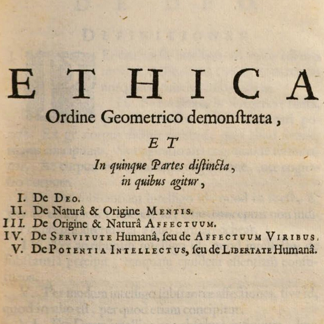

Spinoza’s Ethics II
Mon., Feb. 18
In this class, we continue discussing the metaphysical system in Spinoza’s Ethics. In Part II, Spinoza examines the human mind. In general, the causal sequences in nature are to be understood under one of God’s attributes. Under the attribute of thought, there is an idea for everything in Nature (i.e. everything that follows from God's essence). According to Spinoza’s ‘parallelism’, any causal sequence can be understood physically (under the attribute of Extension) or mentally (under the attribute of Thought). The mind-body union that Descartes struggled to explain lies in the fact that the Mind is the idea of the Body. In other words, instead of there being any sort of interaction between the mental and the physical, the Mind and the Body are one and the same thing understood under different attributes.
Key Concepts: Dual-Aspect Monism
Readings:
required
Powerpoint Slides:
N/A
Other Resources:
Early Modern Texts
Stanford Encyclopedia of Philosophy
Internet Encyclopedia of Philosophy